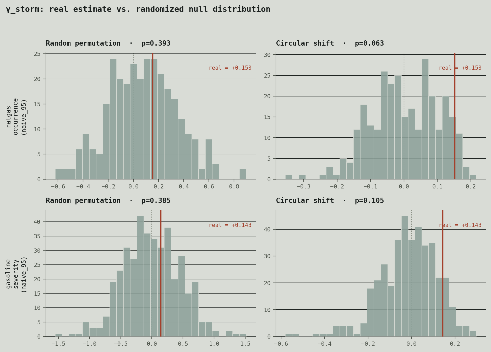
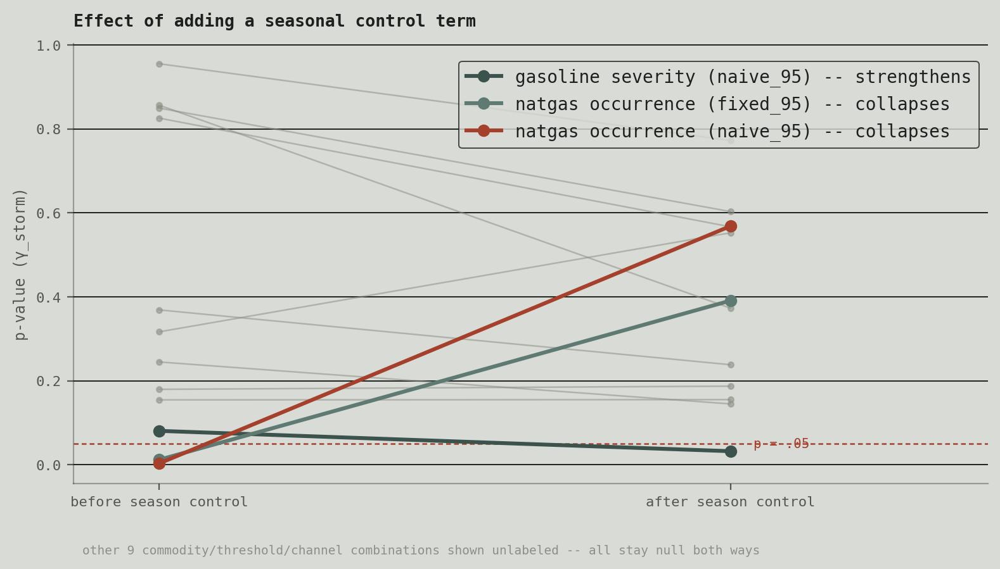
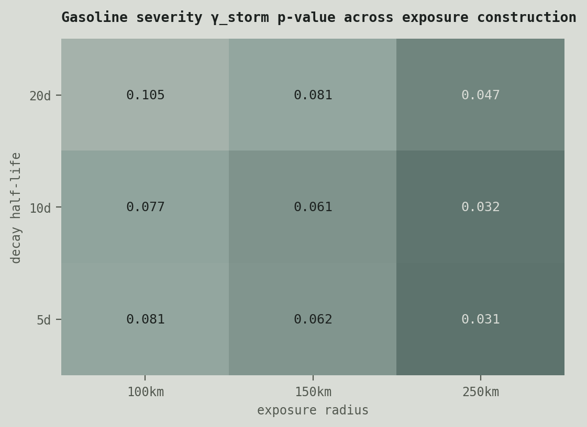

A score-driven GAS/GPD framework for tail risk in WTI crude, RBOB gasoline, and Henry Hub natural gas futures — with the twist that the time-varying parameters are pushed not just by returns, but by physical covariates: NASA storm-track data and satellite temperature reanalysis.
Standard GARCH-family models let volatility respond to its own past, but energy markets have an unusually direct physical channel into risk: a hurricane shutting down Gulf refining capacity, or a cold snap spiking heating demand, moves the tails of the return distribution in ways that are visible in weather data before they're visible in price data. This paper asks how much of energy futures' tail risk can be explained by those physical shocks directly, rather than inferred after the fact from price moves alone.
The core engine is a score-driven time-varying parameter (GAS/DCS) model in the sense of Creal, Koopman, and Lucas (2013), paired with a Generalized Pareto tail specification following Massacci's (2017, Management Science) approach to dynamic tail risk. Score-driven models were chosen over a second Hawkes specification specifically to diversify the methodological toolkit across the broader research agenda, rather than defaulting to the same estimator again.
Storm and temperature data give the model a covariate that moves ahead of price in a way that's physically interpretable rather than statistically inferred — a hurricane's track is known before it fully prices into RBOB futures, and a cold anomaly is known before it fully prices into Henry Hub. That timing gap is the mechanism this paper set out to quantify.
None of it holds up. The storm-exposure covariate was run through cross-threshold construction checks, explicit seasonal-cycle controls, and permutation/circular-shift placebo inference, across both the occurrence and severity channels and all three instruments. Every result that looked significant on a first pass — including one that initially cleared conventional significance thresholds — collapsed once tested against a randomized null or an explicit hurricane-season control.
The leading interpretation: Gulf Coast storms don't arrive as surprises. NHC advisories and forecast cones give markets days of lead time before a storm's physical footprint — the thing this covariate measures — actually peaks. By the time exposure is high, the disruption risk is very plausibly already priced in. That reframes the null from "no effect" to "no effect left to find, because the market got there first" — a testable claim in its own right, not just an absence of one.
γ_storm's real estimate (red line) against 300 randomized draws per method, for the two candidates that survived to the placebo stage. Random permutation destroys the exposure series' seasonal shape entirely; circular shift preserves it and only scrambles which dates it lines up with — the gap between the two columns is itself diagnostic.

Adding an explicit seasonal-cycle term to the model pulls the two candidate effects in opposite directions — natgas occurrence collapses, gasoline severity strengthens — which is the split that motivated placebo-testing both rather than trusting either on the seasonally-controlled p-value alone.

Gasoline severity's p-value across a grid of exposure-construction choices (radius, decay half-life). The smooth gradient — rather than a sharp, isolated sweet spot — is itself evidence against a real, well-localized effect hiding at some untried parameter setting.

The data pipeline and estimation — futures returns, storm-exposure indices, and temperature-anomaly series across all three instruments — are complete. Current work is writing up the null result with the market-efficiency interpretation as the central claim; target journal still under consideration.